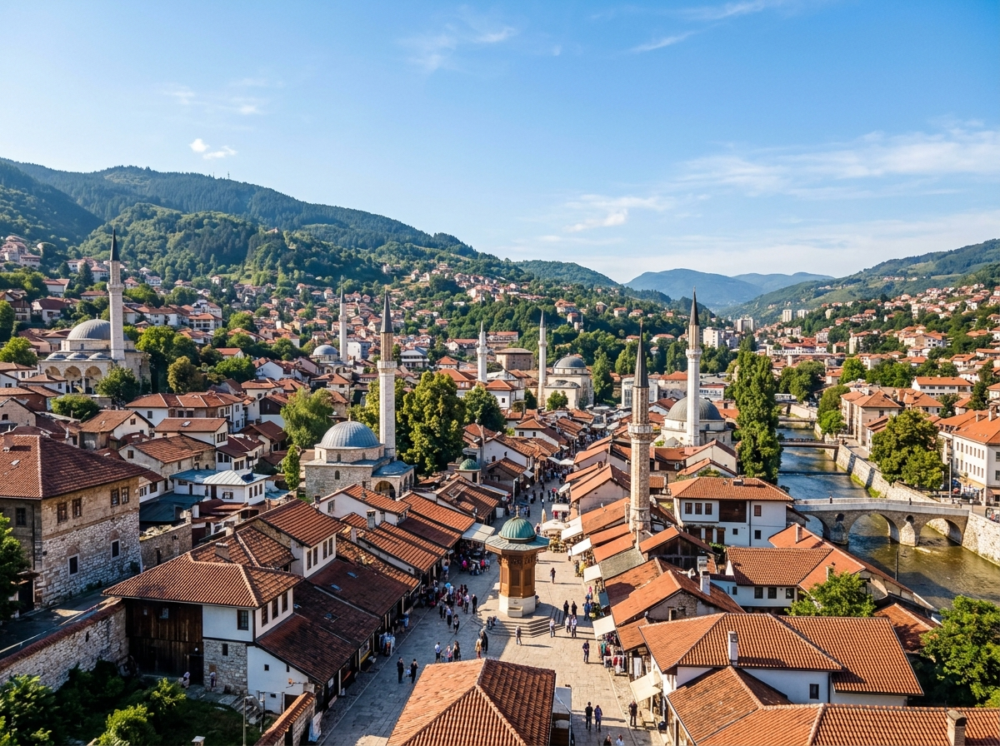
Hier stehen die wichtigsten Daten zu deinem Land. In der App baust du daraus deinen eigenen Steckbrief.
| Hauptstadt | Sarajevo |
| Kontinent | Europa (im Südosten, am Westbalkan) |
| Sprache | Bosnisch, Kroatisch und Serbisch (alle drei sind sehr ähnlich) |
| Währung | Konvertible Mark |
| Einwohner | etwa 3,2 bis 3,5 Millionen Menschen |
| Fläche | rund 51.000 km², etwa so groß wie das deutsche Bundesland Niedersachsen, also kleiner als Bayern |
| Großer Fluss / Berg | der Fluss Neretva und der höchste Berg Maglić mit etwa 2.386 Metern |
| Nachbarländer | Kroatien, Serbien und Montenegro |
In Bosnien und Herzegowina gibt es viele besondere Orte. Diese vier solltest du kennen.
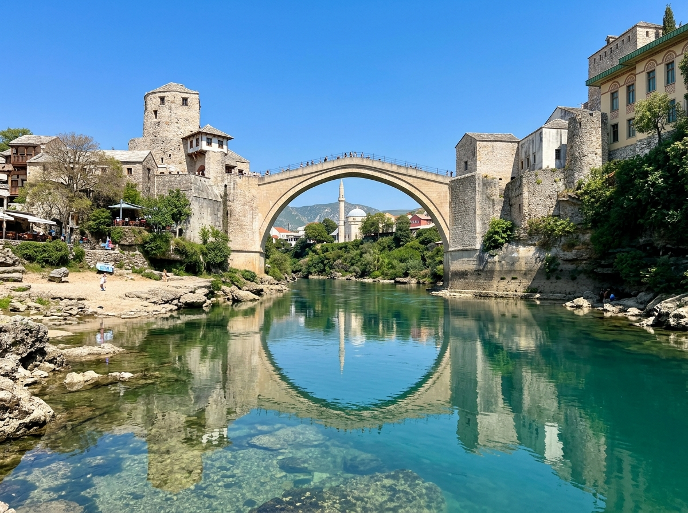
Alte Brücke von Mostar (Stari Most)Die Alte Brücke von Mostar ist eine wunderschöne Steinbogenbrücke über den Fluss Neretva. Sie wurde vor über 400 Jahren gebaut. Im Krieg wurde die Brücke zerstört, danach hat man sie genau wieder aufgebaut. Heute ist sie ein Weltkulturerbe. Mutige Männer springen von der hohen Brücke in den kalten Fluss.
Grüne Wörter für die AppSteinbrückeFluss Neretvawieder aufgebautWeltkulturerbeins Wasser springen
Altstadt von Sarajevo (Baščaršija)Die Altstadt von Sarajevo heißt Baščaršija. Sie hat enge Gassen und einen alten Markt. Hier stehen kleine Handwerkerläden, Cafés und Moscheen dicht nebeneinander. Schon vor langer Zeit haben hier Händler gewohnt und gehandelt.
Grüne Wörter für die AppAltstadtenge Gassenalter MarktHandwerkerlädenMoscheen
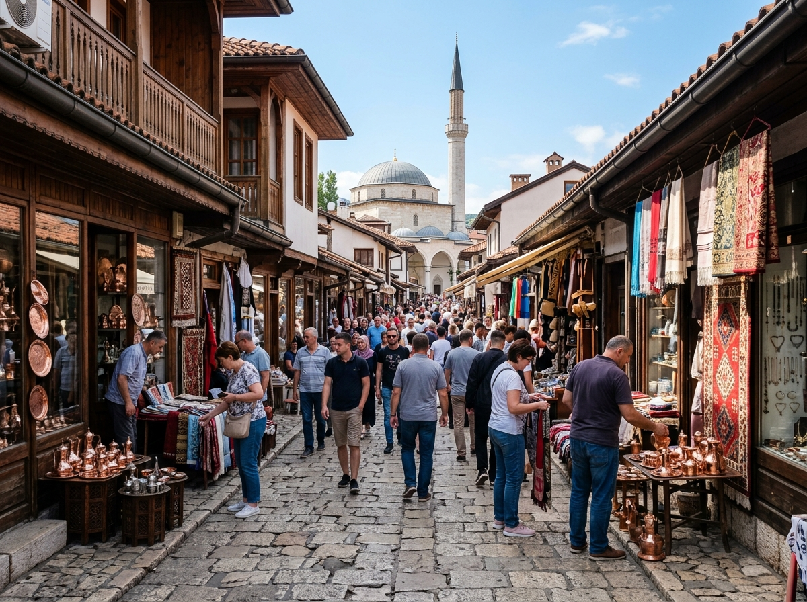
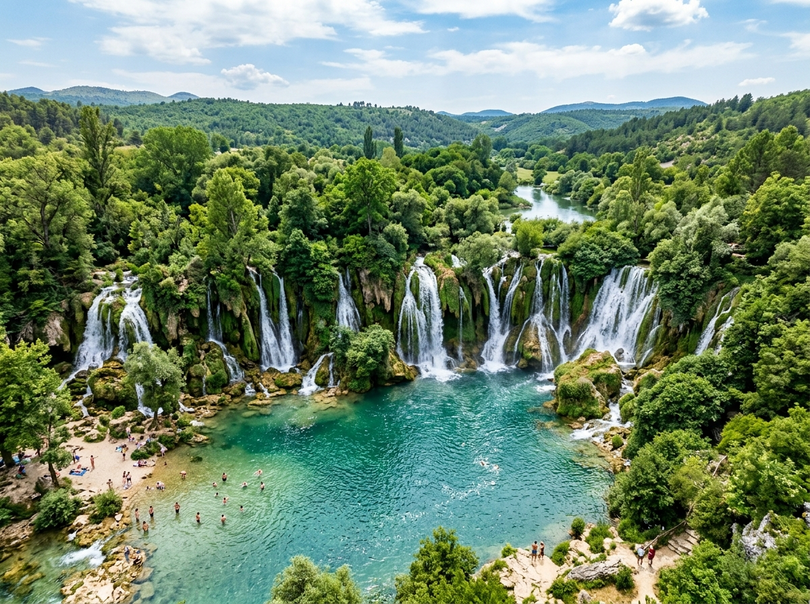
Kravica-WasserfälleDie Kravica-Wasserfälle sind breite Wasserfälle mitten in der Natur. Das Wasser stürzt über mehrere Stufen in einen großen See. Im Sommer kommen viele Menschen zum Baden hierher. Rundherum wachsen grüne Bäume und Büsche.
Grüne Wörter für die AppWasserfällestürzt herabgroßer SeebadenNatur
Nationalpark SutjeskaDer Nationalpark Sutjeska ist einer der ältesten und wildesten Nationalparks in Europa. Dort wachsen sehr alte Buchenwälder, durch die kaum ein Mensch geht. Es gibt tiefe Schluchten und den höchsten Berg des Landes, den Maglić. Viele wilde Tiere leben hier geschützt.
Grüne Wörter für die AppNationalparkalte Wäldertiefe Schluchtenhöchster Berg Maglićwilde Tiere
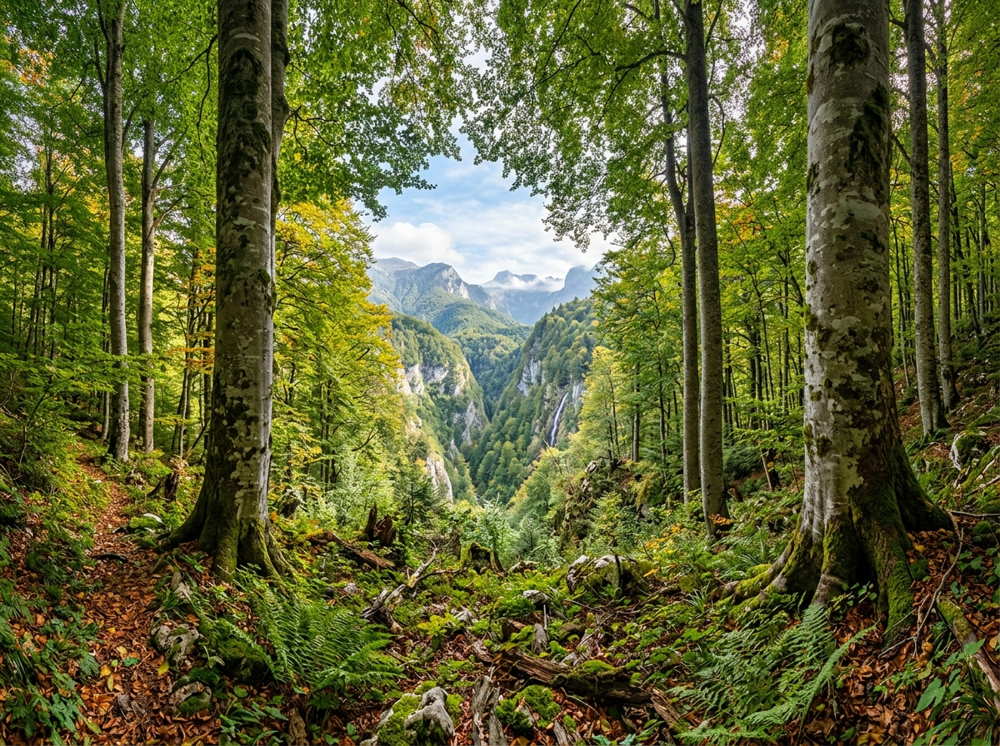
In den Wäldern und Flüssen von Bosnien und Herzegowina leben besondere Tiere.
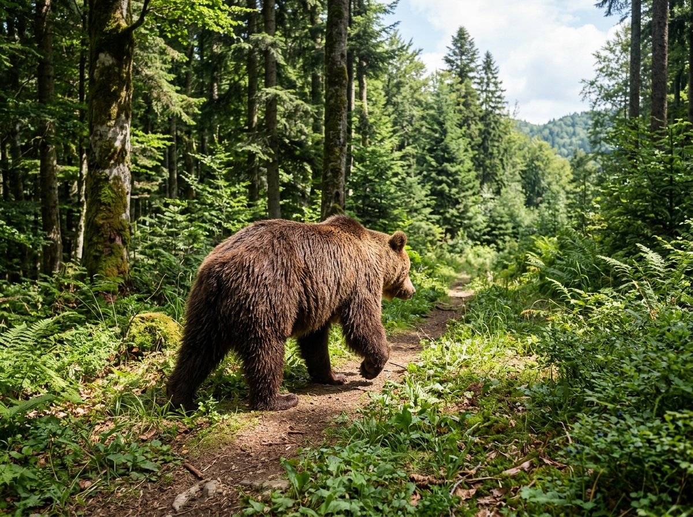
BraunbärIn den Bergwäldern von Bosnien und Herzegowina leben noch viele Braunbären. Der Braunbär ist das größte Landraubtier in Europa. Er ist sehr stark und kann gut klettern. Im Winter hält er einen langen Winterschlaf.
Grüne Wörter für die AppBraunbärBergwäldergrößtes Raubtiersehr starkWinterschlaf
BalkanluchsDer Balkanluchs ist eine seltene Wildkatze mit Pinseln an den Ohren. Es gibt nur noch sehr wenige von ihnen. Sie leben versteckt in den Wäldern am Westbalkan. Bosnien ist eines der letzten Gebiete, in dem dieser Luchs noch lebt.
Grüne Wörter für die AppLuchsWildkatzePinsel an den Ohrensehr seltenlebt versteckt
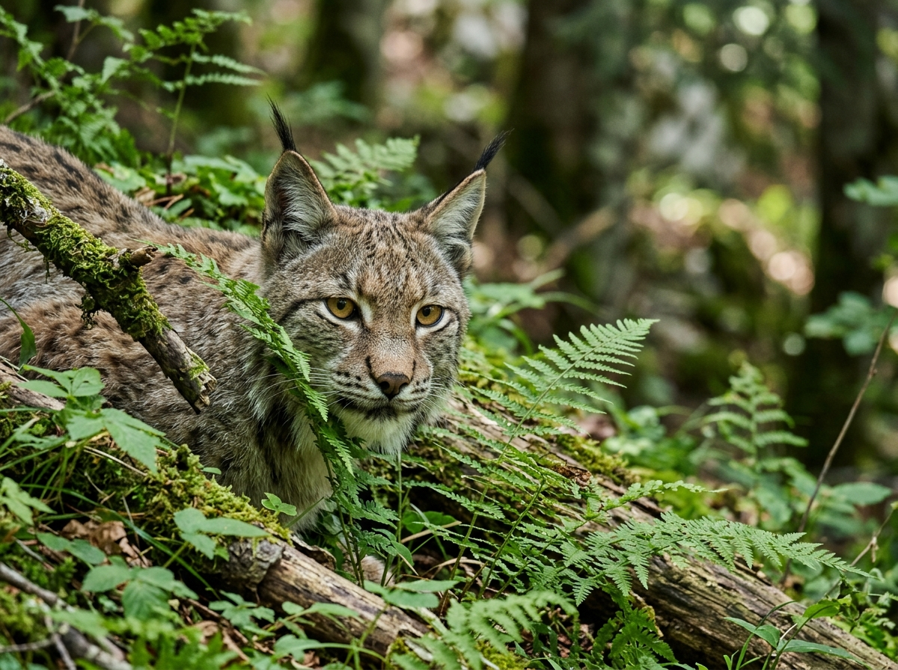
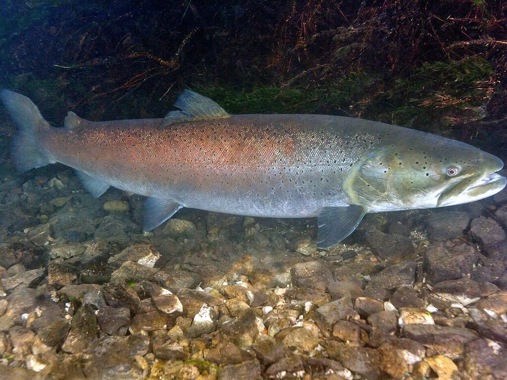
HuchenDer Huchen ist ein großer Lachsfisch. Er lebt in den klaren und schnellen Flüssen des Landes, zum Beispiel im Fluss Una. Der Huchen kann sehr groß und schwer werden. Er ist selten und braucht sauberes Wasser.
Grüne Wörter für die AppHuchengroßer FischLachsfischklare FlüsseFluss Una
In der App kannst du beim Essen das Foto nehmen oder dein Gericht selbst malen.
ĆevapiĆevapi sind kleine gegrillte Röllchen aus Hackfleisch. Sie sind das Nationalgericht von Bosnien und Herzegowina. Man isst sie in einem weichen Fladenbrot. Dazu gibt es Zwiebeln und saure Sahne.
Grüne Wörter für die AppFleischröllchengegrilltHackfleischFladenbrotNationalgericht
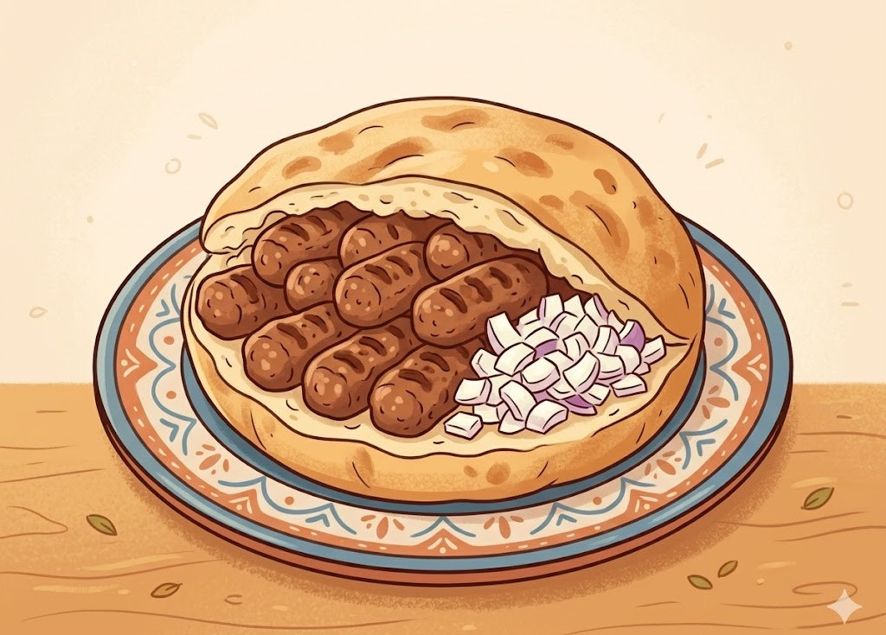
BurekBurek ist eine Rolle aus dünnem Blätterteig. Innen ist sie mit Hackfleisch oder Käse gefüllt. Burek wird in einem runden Blech gebacken und in Stücke geschnitten. Viele Menschen essen ihn gern zum Frühstück.
Grüne Wörter für die AppBlätterteiggefülltHackfleisch oder Käserundes Blechzum Frühstück
BaklavaBaklava ist eine süße Nachspeise aus dünnem Teig. Zwischen den Teigschichten liegen viele gehackte Nüsse. Über das gebackene Stück kommt süßer Sirup. Baklava ist klebrig und sehr süß.
Grüne Wörter für die Appsüße Nachspeisedünner Teigviele Nüssesüßer Sirupklebrig
⚽ Gut zu wissen
Die Fußball-Nationalmannschaft von Bosnien und Herzegowina hat den Spitznamen Zmajevi, das heißt die Drachen. Sie spielt im blauen Trikot mit gelben Streifen. Bosnien ist ein kleines Land, hat aber ein starkes Team. Für die WM 2026 musste die Mannschaft erst in den Playoffs kämpfen. Sie gewann dort gegen Wales und gegen Italien, beide Male im Elfmeterschießen. So hat sich Bosnien für die WM 2026 qualifiziert.
Grüne Wörter für die AppZmajeviblaues TrikotPlayoffsWM 2026Elfmeterschießen
🌟 Profi-Wissen
Edin Džeko ist der bekannteste Fußballer aus Bosnien und Herzegowina. Er hat für berühmte Vereine wie die AS Roma in Italien gespielt und viele Tore geschossen. Džeko ist Bosniens Rekordtorschütze und ein Nationalheld.
Grüne Wörter für die AppEdin DžekoRekordtorschützeAS RomaNationalheldBosnien
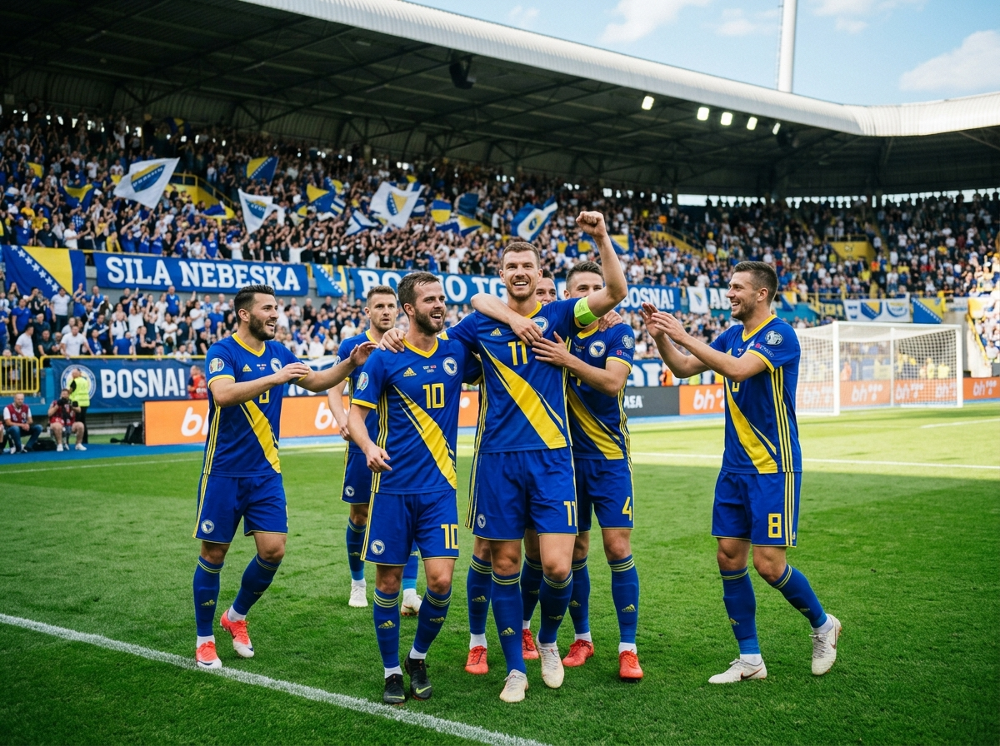
Schule in Bosnien und HerzegowinaDie Kinder in Bosnien und Herzegowina gehen von Montag bis Freitag zur Schule, so wie bei uns. An manchen Schulen gibt es zwei Schichten. Eine Gruppe hat am Vormittag Unterricht, die andere Gruppe kommt am Nachmittag. Viele Kinder lernen in der Schule drei Sprachen, denn im Land werden Bosnisch, Kroatisch und Serbisch gesprochen.
Grüne Wörter für die AppMontag bis Freitagzwei SchichtenVormittag und Nachmittagdrei SprachenUnterricht
Leben in den BergenEin großer Teil von Bosnien und Herzegowina besteht aus hohen Bergen. Viele Familien wohnen in kleinen Dörfern zwischen den Wäldern. Im Winter liegt dort oft viel Schnee, und die Kinder fahren Schlitten oder Ski. Manche Familien halten Schafe und Kühe und machen ihren eigenen Käse.
Grüne Wörter für die Apphohe Bergekleine Dörferviel SchneeSchlitten und SkiSchafe und Kühe
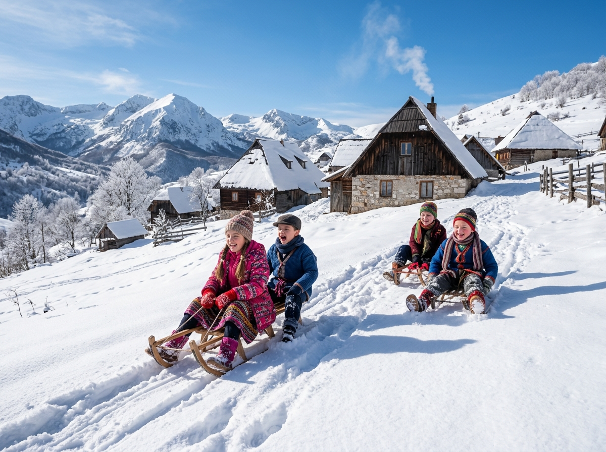